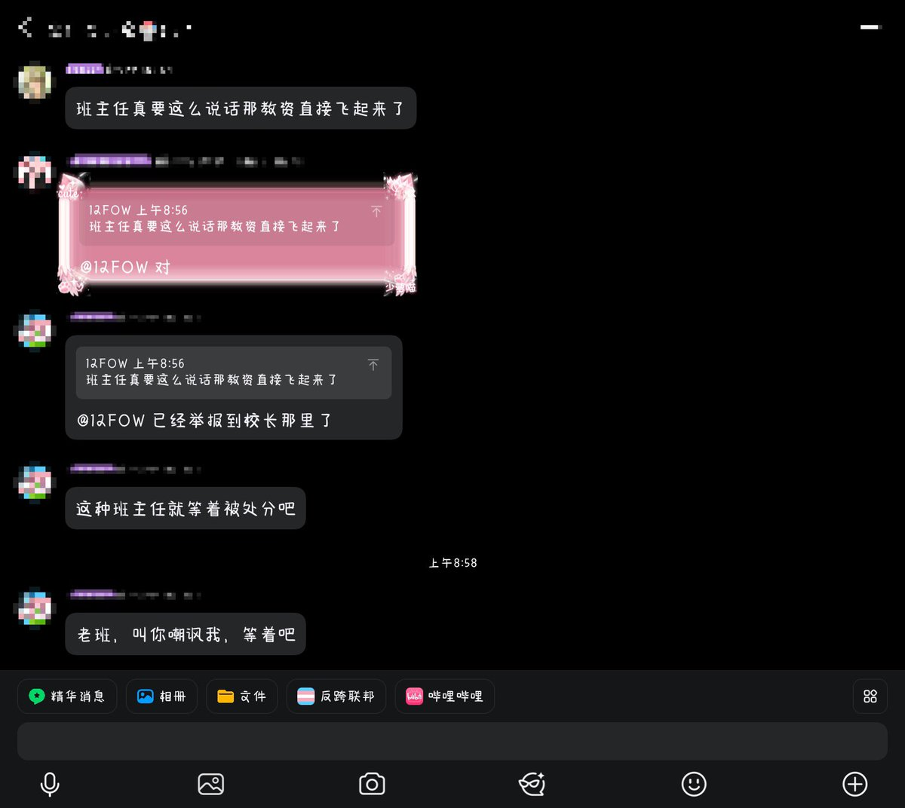

根据我多年做家校沟通的经验，截图当中的“教师”的说话方式，不可能是真实的教师，真实的教师也不可能通过这种方式联系当事人，这件事情纯粹是有人恶意假扮，以此来陷害当事人，引诱当事人通过错误举报的方式来让自己的处境更惨（我接受过同样有过类似情况的未成年辍学个案，某些恶俗人士的害人心理极其严重）
最有可能的情况是：网络上的恶俗人士看到有跨性别学生失学离家出走，准备恶意陷害取乐，然后通过开盒拿到失学离家出走当事人的个人信息和学校信息。
再然后假扮成班主任加当事人QQ，欺负当事人没有对事情真实性的分辨能力。
然后通过辱骂激怒缺乏分辨能力的未成年当事人，诱导当事人举报。
学校一问教师发现毫无此事，但学校因此得知了当事人的跨性别身份，开始排斥当事人，恶俗人士的陷害目的达成。
最有可能的情况是：网络上的恶俗人士看到有跨性别学生失学离家出走，准备恶意陷害取乐，然后通过开盒拿到失学离家出走当事人的个人信息和学校信息。
再然后假扮成班主任加当事人QQ，欺负当事人没有对事情真实性的分辨能力。
然后通过辱骂激怒缺乏分辨能力的未成年当事人，诱导当事人举报。
学校一问教师发现毫无此事，但学校因此得知了当事人的跨性别身份，开始排斥当事人，恶俗人士的陷害目的达成。
